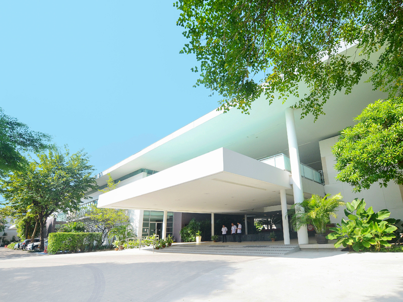
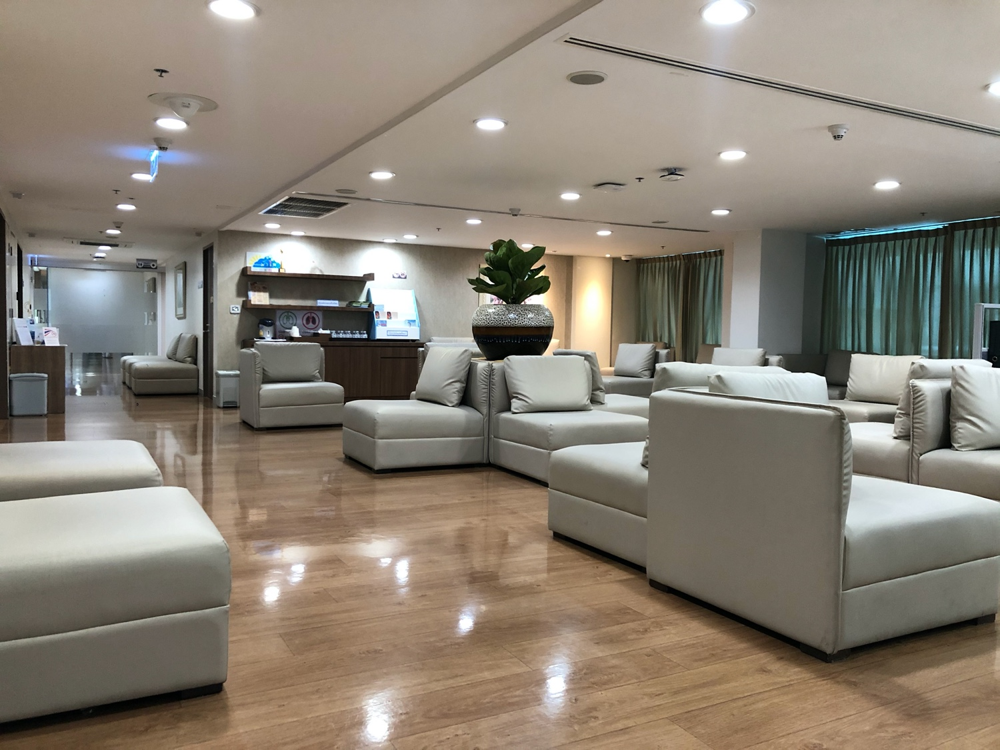
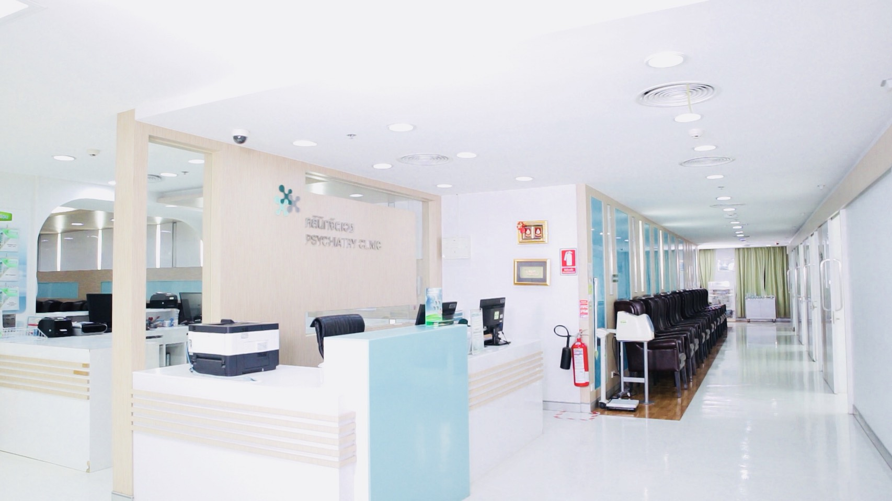

โรงพยาบาลมนารมย์เป็นโรงพยาบาลเอกชนเฉพาะทางสุขภาพจิตและจิตเวชที่ให้บริการด้าน
ปัญหาจิตเวชและระบบประสาทให้แก่ผู้ป่วย ทั้งเด็ก ผู้ใหญ่ ผู้สูงอายุ จิตบำบัดแบบกลุ่ม จิตบำบัด
ครอบครัว รวมไปถึงคู่สมรสบำบัด และด้วยความที่เป็นโรงพยาบาลเอกชน จึงมีบริการบำบัด ฟื้นฟู
ผู้ป่วยจิตเวชด้วยกิจกรรมที่หลากหลาย ทั้งศิลปะ ดนตรี และกิจกรรมอื่น ๆ ส่วนอัตราค่าบริการ
สำหรับผู้ป่วยนอกครั้งแรกจะอยู่ราว ๆ 1,000-3,000 บาท ไม่รวมค่ายาและค่าตรวจเพิ่มเติม
เบอร์ติดต่อ 0-2725-9595, 0-2032-9595

โรงพยาบาลมนารมย์

ศูนย์จิตรักษ์ โรงพยาบาลกรุงเทพ

ศูนย์จิตรักษ์ โรงพยาบาลกรุงเทพเป็นโรงพยาบาลเอกชนที่มีจิตแพทย์ นักจิตวิทยา นักจิต
บำบัด คอยให้คำปรึกษาปัญหาสุขภาพจิตที่หลากหลาย ทั้งในด้านการรักษา ฟื้นฟู หรือป้องกันภาวะ
ทางจิตเวชด้วย นอกจากนี้ยังมีบริการจิตบำบัดครอบครัว คู่สมรสบำบัด ผู้มีปัญหาติดสุราเรื้อรัง ติดยา
เสพติดและอยากเลิก หรือผู้ที่มีอาการป่วยทางกาย เช่นโรคเรื้อรังต่าง ๆ อย่างโรคหลอดเลือดสมอง
โรคหัวใจ โรคมะเร็ง ที่สุ่มเสี่ยงมีภาวะทางสุขภาพจิตสูงด้วย ส่วนอัตราค่าบริการปรึกษาจิตแพทย์
เริ่มต้นที่ 1,500 บาท (พบแพทย์ได้ 1 ชั่วโมงเต็ม) ค่าบริการอื่น ๆ อีก 500 บาท ไม่รวมค่ายาและค่า
ตรวจเพิ่มเติม
เบอร์ติดต่อ 0-2310-3027, 0-2310-3751, 0-2310-3752
เบอร์ติดต่อ 0-2310-3027, 0-2310-3751, 0-2310-3752
คลินิกจิตเวช โรงพยาบาลพญาไท 2

คลินิกจิตเวช โรงพยาบาลพญาไท 2 ผู้ป่วยสามารถเข้าพบได้ทั้งในโรงพยาบาลและทาง
ออนไลน์ผ่านเว็บไซต์โรงพยาบาล โดยทั้ง 2 แนวทางสามารถระบุเวลานัดที่เราสะดวกได้เลย อีกทั้ง
จุดเด่นของที่นี่ยังมีการบำบัดหลายด้าน ถ้าไม่ต้องการใช้ยารักษาก็ปรึกษาแพทย์ได้ว่าควรจะรักษาด้วย
วิธีไหน อย่างไร ก็ถือว่าเป็นตัวเลือกหนึ่งสำหรับคนที่อยากพบจิตแพทย์ อยากพูดคุย ระบายความ
ทุกข์ทรมานใจกับแพทย์เฉพาะทาง เพื่อให้กลับมาใช้ชีวิตได้ตามปกติอีกครั้ง ส่วนอัตราค่าบริการ
ปรึกษาจิตแพทย์จะเริ่มต้นที่ 1,500 บาท สามารถพบแพทย์ได้ประมาณ 30-40 นาที หากเกินเวลานี้
จะมีค่าใช้จ่ายเพิ่มเติม หรือหากมีการจ่ายยา มีตรวจเพิ่มเติมก็จะมีค่าใช้จ่ายเพิ่มขึ้นด้วย
เบอร์ติดต่อ 0-2617-2444 ต่อ 7448
เบอร์ติดต่อ 0-2617-2444 ต่อ 7448
คลินิก Mind and Mood Clinic

คลินิก Mind and Mood Clinic เป็นคลินิกเฉพาะทางด้านสุขภาพจิต ที่ให้คำปรึกษาด้านจิต
เวชครอบคลุมทุกช่วงวัยตั้งแต่วัยเด็ก วัยรุ่น วัยผู้ใหญ่ และวัยผู้สูงอายุ รวมไปถึงปัญหาสุขภาพจิต
ครอบครัว คู่สมรส โดยที่นี่จะเน้นการบำบัดด้วยการพูดคุยเพื่อปรับเปลี่ยนความคิดและพฤติกรรม
(Cognitive Behavioral Therapy : CBT) โดยทีมจิตแพทย์ผู้เชี่ยวชาญทาง CBT นอกจากนี้ยังมีห้อง
ตรวจส่วนตัวให้บริการสำหรับคนที่ไม่สะดวกใจให้ผู้อื่นเห็นว่าเรามาพบจิตแพทย์ด้วยนะคะ ส่วนอัตรา
ค่าบริการของที่นี่เริ่มต้นที่ 3,000 บาท (พบแพทย์ได้ 1 ชั่วโมงเต็ม)
เบอร์ติดต่อ 0-2561-0210-11, 06-1401-2274
เบอร์ติดต่อ 0-2561-0210-11, 06-1401-2274